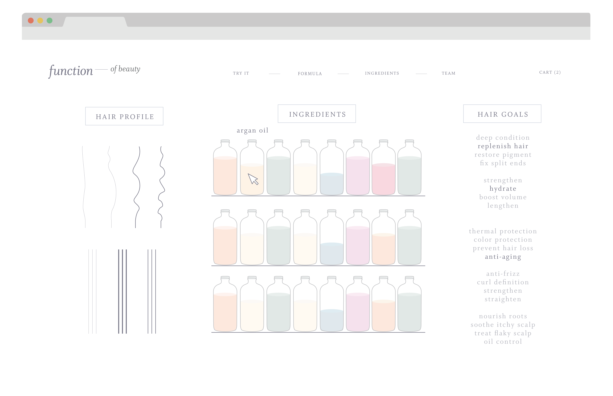

Function of Beauty is a beauty startup backed by Y-Combinator and more. It specializes in personal beauty products such as Shampoo and Conditioners.
At first we went with a design with a microscope hinting that this function would be used for 'looking into' the bottle of shampoo or conditioner. Some of the issues we found were many people either haven't used a microscope, won't know what parts of the microscope are functional, and it really had nothing to do with hair aside from the fact that the screen represented a 'hair lab.'
This second iteration was a bit better than before, only because it was a lot more intuitive, so we thought. It didn't have anything obscure like the microscope in the previous mockup, but it had way too much going on. Where do you even begin? What happens if you click a bottle with green liquid? Pink liquid? What about all those hair strands. What if one of those strands doesn't look like my hair? And do I pick my goals first, then the bottle, then the hair strand? Or is it another one of the 27 series of options I have? Too much. Back to the drawing board.
Whenever users go through the process of ordering a bottle of shampoo/conditioner, they are required to tell us their hair goals in order to receive the most personalized product for their hair. If we created the hair lab for users to experiment with the lab, then we would automatically know what their goals are. This information would eliminate 23 of the previous 27 options that were available. But it was still too much effort, dabbling between all of the bottles and hair strands that may not even apply to a user's hair. And what if a user wasn't signed up? Using the lab would just add more friction to the entire process.
When anyone opens a book, its usually read left to right. We decided to reply on this intuition for our hair lab, in addition the the features we added. People can take a look at their hair, and select two out of the four hair profile options instantly (Color treated and type). If they touch their hair, then the other two options become very easy to answer (texture and moisture level). The next chapter is goals. Function's target group are people who either want to improve the quality of their hair or people who want to maintain the things that they love about their hair. The people within this group often know what their goals are, as presented by the multitude of options in the 'Hair Goals' section. After the first two options are selected, the specific ingredients in their custom shampoo becomes highlighted, and hovering over the bottle would give a quick description of the role of that ingredient in helping you have healthier hair.
This excercise helped both Zahir and I understand the reservations people have with scientiic elements like algorithims, formulations, ingredients and microscopes. Though Function's primary goal is to take the hair-care industry by storm, it has an awesome opportunity to teach people the impact of specific ingredients on their well being.